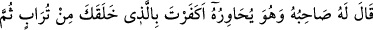
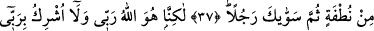
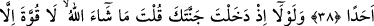
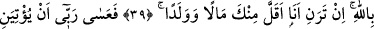
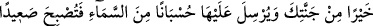
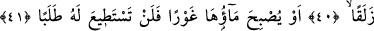
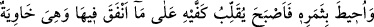
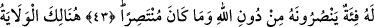
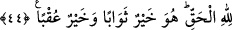

O ALLAH
BENİM RABBİMDİR
37. Karşılıklı konuşan arkadaşı ona hitaben şöyle dedi: “Sen, seni topraktan,
sonra nutfeden (spermadan) yaratan, daha sonra seni bir adam biçimine sokan
Allah’ı inkâr mı ettin?”
38. “Fakat O Allah benim Rabbimdir ve ben Rabbime hiçbir şeyi ortak koşmam.”
39. “Bağına girdiğinde: Mâşâallah! Kuvvet yalnız Allah’ındır, deseydin ya! Eğer
malca ve evlâtça beni kendinden güçsüz görüyorsan (şunu bil ki):”
40. “Belki Rabbim bana, senin bağından daha iyisini verir; senin bağına ise gökten
yıldırımlar gönderir de bağ kupkuru bir toprak hâline gelir.”
41. “Yahut, bağının suyu dibe çekilir de bir daha onu arayıp bulamazsın.”
42. Derken onun serveti kuşatılıp yok edildi. Böylece, bağı uğruna yaptığı
masraflardan ötürü ellerini ovuşturup kaldı. Bağın çardakları yere çökmüştü. “Ah,
keşke ben Rabbime hiçbir ortak koşmamış olsaydım!” diyordu.
43. Kendisine Allah’tan başka yardım edecek destekçileri olmadığı gibi kendi
kendini de kurtaracak güçte değildi.
44. İşte burada yardım ve dostluk, Hak olan Allah’a mahsustur. Mükâfatı en iyi
olan O, en güzel âkıbeti veren yine O’dur.
“Karşılıklı konuşan arkadaşı” mü’min kardeşi “ona hitâben” yâni kardeşi ona hitab
ederek ve tartışarak “şöyle dedi:”